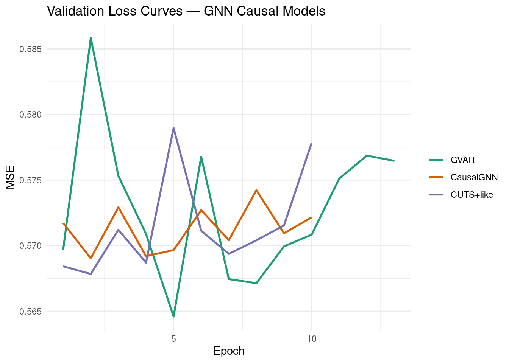
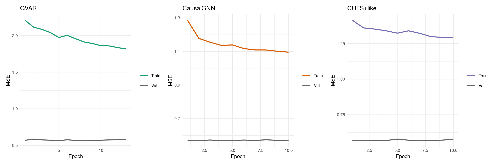
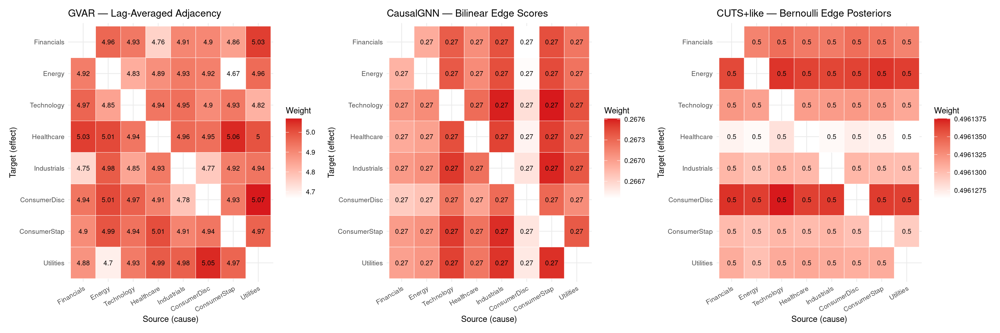
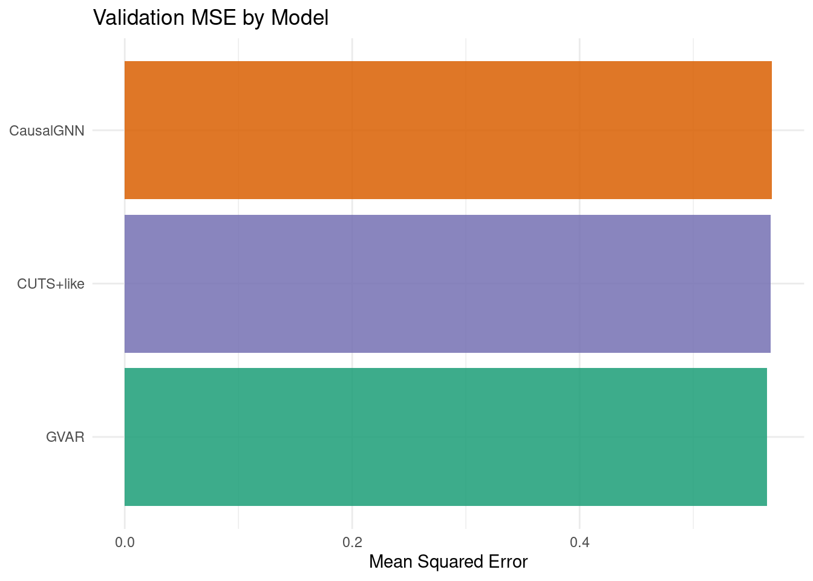
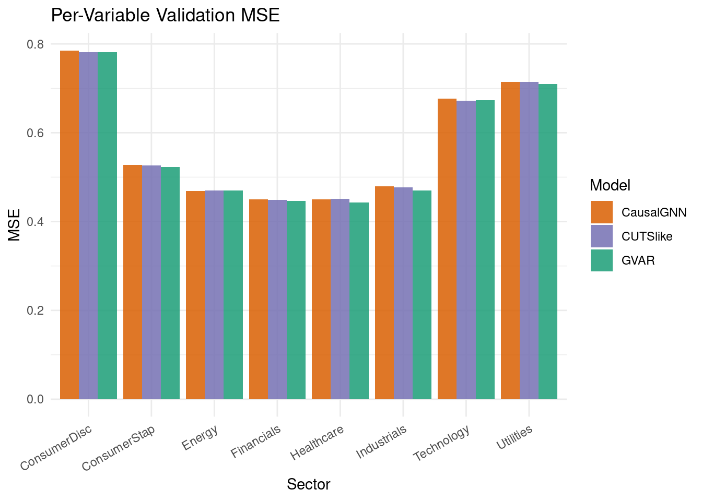
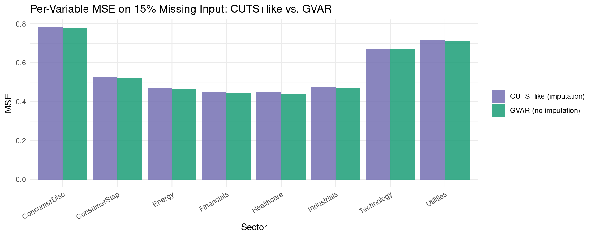

Code
packages <- c(
'tidyverse',
'plyr',
'RCausalML',
'torch',
'tidyquant',
'reshape2',
'scales',
'patchwork',
'igraph',
'zoo'
)
Graph Neural Networks (GNNs) treat multivariate time-series variables as nodes and causal relationships as directed edges in a graph \(\mathcal{G} = (\mathcal{V}, \mathcal{E})\). Message passing makes causal structure explicit and inspectable:
\[\mathbf{h}_i^{(\ell+1)} = \mathrm{UPDATE}\!\left(\mathbf{h}_i^{(\ell)},\ \mathrm{AGGREGATE}\left(\{\mathbf{h}_j^{(\ell)} : j \in \mathcal{N}(i)\}\right)\right)\]
Unlike RNNs or Transformers where causal effects hide inside hidden states, GNN causal models make the graph a first-class object that can be regularised, inspected, and interpreted.
GVAR extends classical VAR with lag-specific learned adjacency matrices and nonlinear GNN transforms:
\[X_i^{(t)} = \sum_{k=1}^{p} \sum_{j=1}^{d} A_{ij}^{(k)} \, \phi\!\left(X_j^{(t-k)}\right) + \epsilon_i^{(t)}\]
\[h(A) = \operatorname{tr}(e^{A \odot A}) - d = 0 \iff A \text{ is a DAG}\]
Joint learning: a bilinear graph learner infers a soft DAG from temporal summaries; stacked edge-conditioned message passing (EdgeConv + GRU update) propagates causal information for forecasting:
\[\mathbf{m}_{j \to i}^{(t)} = \mathrm{MSG}\!\left(\mathbf{h}_j^{(t)}, \mathbf{h}_i^{(t)}, e_{ij}\right), \quad \mathbf{h}_i^{(t+1)} = \mathrm{UPDATE}\!\left(\mathbf{h}_i^{(t)}, \sum_{j \in \mathrm{Pa}(i)} \mathbf{m}_{j \to i}^{(t)}\right)\]
Designed for datasets with missing values. Learns probabilistic Bernoulli graph edges \(q(G) \approx \prod_{ij} \mathrm{Bernoulli}(\pi_{ij})\) and jointly imputes missing values before forecasting. The composite ELBO-style loss is:
\[\mathcal{L} = \underbrace{\mathbb{E}[\log p(X_{\mathrm{obs}} \mid G, X_{\mathrm{miss}})]}_{\text{reconstruction}} + \underbrace{\mathbb{E}[\log p(X_{\mathrm{miss}} \mid G)]}_{\text{imputation}} - \underbrace{\mathrm{KL}[q(G) \| p(G)]}_{\text{graph prior}}\]
We use RCausalML’s gnn_causal_model() function (and convenience wrappers gvar_model(), causal_gnn_model(), cuts_model()) to fit all three architectures on S&P 500 sector ETF daily log-return data (2018–2024).
packages <- c(
'tidyverse',
'plyr',
'RCausalML',
'torch',
'tidyquant',
'reshape2',
'scales',
'patchwork',
'igraph',
'zoo'
)# Install missing packages
#new_packages <- packages[!(packages %in% installed.packages()[,"Package"])]
#if(length(new_packages)) install.packages(new_packages)# Find package root (DESCRIPTION file) and load dev version of RCausalML
.pkg_root <- local({
paths <- c(".", "../..", "../../..", "../../../..")
found <- Filter(function(p) file.exists(file.path(p, "DESCRIPTION")), paths)
if (length(found)) normalizePath(found[1]) else NULL
})
if (!is.null(.pkg_root) && requireNamespace("devtools", quietly = TRUE)) {
try(devtools::load_all(.pkg_root, quiet = TRUE), silent = TRUE)
}
invisible(lapply(packages, function(pkg) {
suppressPackageStartupMessages(library(pkg, character.only = TRUE))
}))set.seed(42)
run_fast <- Sys.getenv("CAUSALML_FAST_RENDER", "TRUE") == "TRUE"
select_torch_device <- function(min_free_mb = 512L) {
if (!requireNamespace("torch", quietly = TRUE)) return("cpu")
if (!torch::cuda_is_available()) return("cpu")
smi_out <- tryCatch(
suppressWarnings(system2(
"nvidia-smi",
args = c("--query-gpu=memory.free", "--format=csv,noheader,nounits"),
stdout = TRUE,
stderr = FALSE
)),
error = function(e) character(0)
)
if (length(smi_out) >= 1L) {
free_mb <- suppressWarnings(as.numeric(trimws(smi_out[1L])))
if (!is.na(free_mb) && free_mb < min_free_mb) {
message(sprintf(
"CUDA has ~%d MiB free (< %d MiB required); using CPU.",
round(free_mb), min_free_mb
))
return("cpu")
}
}
ok <- tryCatch({
x <- torch::torch_randn(c(32L, 20L, 128L), device = "cuda")
torch::nnf_gelu(x)
rm(x)
torch::cuda_empty_cache()
TRUE
}, error = function(e) FALSE)
if (!ok) {
message("CUDA probe failed (likely out of memory); using CPU.")
return("cpu")
}
"cuda"
}
device_use <- if (run_fast) "cpu" else select_torch_device(min_free_mb = 512L)
if (requireNamespace("torch", quietly = TRUE)) torch::torch_manual_seed(42)
cat(sprintf("Using device: %s (run_fast=%s)\n", device_use, run_fast))Using device: cpu (run_fast=TRUE)This section downloads S&P 500 sector ETF prices, converts them to standardized log-returns, builds lagged input/output arrays, and injects synthetic missingness (15 %) for the CUTS+ demonstration.
Note: If online market data is unavailable, the notebook automatically falls back to synthetic demo data so all downstream cells remain runnable.
TICKERS <- c(
"XLF" = "Financials",
"XLE" = "Energy",
"XLK" = "Technology",
"XLV" = "Healthcare",
"XLI" = "Industrials",
"XLY" = "ConsumerDisc",
"XLP" = "ConsumerStap",
"XLU" = "Utilities"
)
fetch_close_prices <- function(tickers, start = "2018-01-01", end = "2024-01-01") {
tryCatch({
raw <- tidyquant::tq_get(names(tickers), get = "stock.prices",
from = start, to = end, complete_cases = TRUE)
if (is.null(raw) || nrow(raw) == 0) return(NULL)
raw |>
dplyr::select(symbol, date, adjusted) |>
tidyr::pivot_wider(names_from = symbol, values_from = adjusted) |>
dplyr::arrange(date) |>
tidyr::drop_na()
}, error = function(e) NULL)
}
close_wide <- fetch_close_prices(TICKERS)
if (is.null(close_wide) || nrow(close_wide) < 30) {
message("Warning: market data unavailable; using synthetic demo data.")
set.seed(42)
n_steps <- 1600L
d_syn <- length(TICKERS)
A_syn <- matrix(0, d_syn, d_syn)
for (i in seq_len(d_syn)) {
A_syn[i, i] <- 0.45
if (i > 1) A_syn[i, i - 1] <- 0.25
if (i > 2 && i %% 2 == 1) A_syn[i, i - 2] <- 0.15
}
x_syn <- matrix(0, n_steps, d_syn)
x_syn[1, ] <- rnorm(d_syn)
noise_syn <- 0.15 * matrix(rnorm(n_steps * d_syn), n_steps, d_syn)
for (t in seq(2L, n_steps)) x_syn[t, ] <- x_syn[t - 1L, ] %*% t(A_syn) + noise_syn[t, ]
returns_df <- as.data.frame(x_syn)
colnames(returns_df) <- unname(TICKERS)
data_np <- scale(x_syn)
} else {
price_mat <- as.matrix(close_wide[, names(TICKERS)])
log_ret <- log(price_mat[-1L, ] / price_mat[-nrow(price_mat), ])
colnames(log_ret) <- unname(TICKERS[colnames(price_mat)])
returns_df <- as.data.frame(log_ret)
data_np <- scale(log_ret)
}
VAR_NAMES <- colnames(data_np)
d <- ncol(data_np)
Tt <- nrow(data_np)
cat(sprintf("d=%d variables, T=%d\n", d, Tt))d=8 variables, T=1508Variables: Financials, Energy, Technology, Healthcare, Industrials, ConsumerDisc, ConsumerStap, Utilities LAG <- 10L
AHEAD <- 1L
build_lag_dataset <- function(data, lag, ahead = 1L) {
N <- nrow(data) - lag - ahead + 1L
x_seq <- array(NA_real_, dim = c(N, lag, ncol(data)))
y_mat <- matrix(NA_real_, nrow = N, ncol = ncol(data))
for (t in seq_len(N)) {
x_seq[t, , ] <- data[t:(t + lag - 1L), , drop = FALSE]
y_mat[t, ] <- data[t + lag + ahead - 1L, ]
}
list(x_seq = x_seq, y_mat = y_mat)
}
lag_data <- build_lag_dataset(data_np, LAG, AHEAD)
X_seq <- lag_data$x_seq
Y_mat <- lag_data$y_mat
split <- floor(0.8 * nrow(X_seq))
X_tr <- X_seq[seq_len(split), , ]
X_val <- X_seq[(split + 1L):nrow(X_seq), , ]
Y_tr <- Y_mat[seq_len(split), ]
Y_val <- Y_mat[(split + 1L):nrow(Y_mat), ]
cat(sprintf("Train: (%d, %d, %d) Val: (%d, %d, %d)\n",
dim(X_tr)[1], dim(X_tr)[2], dim(X_tr)[3],
dim(X_val)[1], dim(X_val)[2], dim(X_val)[3]))Train: (1198, 10, 8) Val: (300, 10, 8)# Inject 15 % synthetic missingness for CUTS+ demo (same as Python notebook)
set.seed(0L)
MISS_RATE <- 0.15
miss_mask <- array(runif(prod(dim(X_seq))) < MISS_RATE, dim = dim(X_seq))
X_miss <- X_seq
X_miss[miss_mask] <- 0.0
X_miss_tr <- X_miss[seq_len(split), , ]
X_miss_val <- X_miss[(split + 1L):nrow(X_seq), , ]
cat(sprintf("Missing rate: %.1f%%\n", 100 * mean(miss_mask)))Missing rate: 15.1%Missing tensor shape: (1498, 10, 8)All three architectures are implemented as R torch nn_module objects inside RCausalML and are accessible through the single entry-point gnn_causal_model().
hidden-dim state.n_gnn_layers): concatenates source/target features + edge weight → two-layer MLP → GRU update → layer norm.Input x_t (d vars, possibly missing)
│
▼
Imputation Network (values + mask → lag*d)
│
▼
Per-variable GRU Encoder
│
▼
Variational Graph q(G) = Bernoulli(π_ij)
│
▼
EdgeConv Message Passing
│
▼
Forecast ŷ (d variables)Losses: MSE + DAG acyclicity + KL(\(q(G) \| \text{Bernoulli}(0.1)\))
gnn_causal_model() is the single entry point for all three architectures. Internally it:
(lag, d) input/output tensors (with optional synthetic missingness).cat("Fitting GVAR, CausalGNN, and CUTS+-like models ...\n")Fitting GVAR, CausalGNN, and CUTS+-like models ...gnn_fit <- gnn_causal_model(
data = data_np,
lag = LAG,
models = c("gvar", "causalgnn", "cuts"),
hidden = if (run_fast) 32L else 48L,
n_gnn_layers = if (run_fast) 2L else 3L,
lam_sparse = 0.003,
lam_dag = 0.08,
lam_kl = 1e-3,
miss_rate = MISS_RATE,
epochs = if (run_fast) 30L else 60L,
lr = 4e-4,
patience = if (run_fast) 8L else 12L,
batch_size = if (identical(device_use, "cuda")) 32L else 64L,
val_split = 0.2,
device = device_use,
verbose = !run_fast
)
cat("\nTraining complete.\n")
Training complete.cat("Validation MSE:\n")Validation MSE: gvar causalgnn cuts
0.564595 0.569034 0.567840 val_mse_df <- data.frame(
Model = c("GVAR", "CausalGNN", "CUTS+like"),
Val_MSE = unname(gnn_fit$val_mse)
) |> dplyr::arrange(Val_MSE)
print(val_mse_df) Model Val_MSE
1 GVAR 0.5645947
2 CUTS+like 0.5678397
3 CausalGNN 0.5690339hist_list <- gnn_fit$histories
make_loss_df <- function(nm) {
h <- hist_list[[nm]]
if (is.null(h)) return(NULL)
n_ep <- sum(h$val != 0)
data.frame(
epoch = seq_len(n_ep),
val = h$val[seq_len(n_ep)],
train = h$train[seq_len(n_ep)],
model = nm
)
}
loss_df <- dplyr::bind_rows(lapply(names(hist_list), make_loss_df))
loss_df$model <- factor(loss_df$model,
levels = c("gvar", "causalgnn", "cuts"),
labels = c("GVAR", "CausalGNN", "CUTS+like"))
ggplot(loss_df, aes(x = epoch, y = val, colour = model)) +
geom_line(linewidth = 0.9) +
scale_colour_manual(values = c(
"GVAR" = "#1b9e77",
"CausalGNN" = "#d95f02",
"CUTS+like" = "#7570b3"
)) +
labs(
title = "Validation Loss Curves — GNN Causal Models",
x = "Epoch",
y = "MSE",
colour = NULL
) +
theme_minimal()
plot_model_loss <- function(nm, label, colour) {
h <- hist_list[[nm]]
if (is.null(h)) return(NULL)
n_ep <- sum(h$val != 0)
df <- data.frame(
epoch = seq_len(n_ep),
Train = h$train[seq_len(n_ep)],
Val = h$val[seq_len(n_ep)]
) |> tidyr::pivot_longer(-epoch, names_to = "split", values_to = "loss")
ggplot(df, aes(x = epoch, y = loss, colour = split)) +
geom_line(linewidth = 0.85) +
scale_colour_manual(values = c("Train" = colour, "Val" = "grey40")) +
labs(title = label, x = "Epoch", y = "MSE", colour = NULL) +
theme_minimal(base_size = 9)
}
p1 <- plot_model_loss("gvar", "GVAR", "#1b9e77")
p2 <- plot_model_loss("causalgnn", "CausalGNN", "#d95f02")
p3 <- plot_model_loss("cuts", "CUTS+like", "#7570b3")
patchwork::wrap_plots(p1, p2, p3, ncol = 3)
For each model, the learned causal matrix \(C \in \mathbb{R}^{d \times d}\) encodes variable-to-variable influence:
C_gvar <- causal_matrix_gnn(gnn_fit, model = "gvar")
C_cgnn <- causal_matrix_gnn(gnn_fit, model = "causalgnn")
C_cuts <- causal_matrix_gnn(gnn_fit, model = "cuts")
cat("GVAR causal matrix (first 3 rows):\n")GVAR causal matrix (first 3 rows): Financials Energy Technology Healthcare Industrials ConsumerDisc
Financials 0.0000 4.9631 4.9330 4.7562 4.9058 4.9035
Energy 4.9231 0.0000 4.8296 4.8890 4.9277 4.9181
Technology 4.9664 4.8513 0.0000 4.9363 4.9493 4.8964
ConsumerStap Utilities
Financials 4.8563 5.0292
Energy 4.6667 4.9564
Technology 4.9307 4.8215
Diagonal (should be ~0 — no self-loops): 0 0 0 0 0 0 0 0 plot_causal_heatmap <- function(C, title, var_names) {
A <- as.matrix(C)
diag(A) <- NA_real_
rownames(A) <- var_names
colnames(A) <- var_names
df <- reshape2::melt(A, na.rm = TRUE)
colnames(df) <- c("Target", "Source", "Weight")
df$Target <- factor(df$Target, levels = rev(var_names))
df$Source <- factor(df$Source, levels = var_names)
ggplot(df, aes(x = Source, y = Target, fill = Weight)) +
geom_tile(colour = "white") +
geom_text(aes(label = round(Weight, 2)), size = 2.5, colour = "black") +
scale_fill_gradient(low = "white", high = "#D7191C",
na.value = "grey90", name = "Weight") +
labs(title = title, x = "Source (cause)", y = "Target (effect)") +
theme_minimal(base_size = 9) +
theme(axis.text.x = element_text(angle = 30, hjust = 1))
}
p_gvar <- plot_causal_heatmap(C_gvar, "GVAR — Lag-Averaged Adjacency", VAR_NAMES)
p_cgnn <- plot_causal_heatmap(C_cgnn, "CausalGNN — Bilinear Edge Scores", VAR_NAMES)
p_cuts <- plot_causal_heatmap(C_cuts, "CUTS+like — Bernoulli Edge Posteriors", VAR_NAMES)
patchwork::wrap_plots(p_gvar, p_cgnn, p_cuts, ncol = 3)
top_edges <- function(C, names, k = 10L) {
n <- length(names)
idx <- which(row(C) != col(C), arr.ind = FALSE)
edges <- data.frame(
source = names[col(C)[idx]],
target = names[row(C)[idx]],
weight = C[idx]
)
edges[order(edges$weight, decreasing = TRUE), ][seq_len(min(k, nrow(edges))), ]
}
for (label_nm in list(list("GVAR", C_gvar), list("CausalGNN", C_cgnn), list("CUTS+like", C_cuts))) {
cat(sprintf("\nTop 10 edges for %s (source -> target):\n", label_nm[[1]]))
te <- top_edges(label_nm[[2]], VAR_NAMES, 10L)
for (i in seq_len(nrow(te))) {
cat(sprintf(" %-14s -> %-14s | %.3f\n", te$source[i], te$target[i], te$weight[i]))
}
}
Top 10 edges for GVAR (source -> target):
Utilities -> ConsumerDisc | 5.069
ConsumerStap -> Healthcare | 5.055
ConsumerDisc -> Utilities | 5.055
Financials -> Healthcare | 5.029
Utilities -> Financials | 5.029
Energy -> Healthcare | 5.013
Energy -> ConsumerDisc | 5.012
Healthcare -> ConsumerStap | 5.006
Utilities -> Healthcare | 4.998
Energy -> ConsumerStap | 4.995
Top 10 edges for CausalGNN (source -> target):
ConsumerStap -> Technology | 0.268
Industrials -> Technology | 0.268
ConsumerStap -> Industrials | 0.268
Industrials -> ConsumerStap | 0.268
ConsumerStap -> Utilities | 0.268
Industrials -> Utilities | 0.268
Technology -> Industrials | 0.268
Technology -> ConsumerStap | 0.268
ConsumerStap -> Healthcare | 0.267
Technology -> Utilities | 0.267
Top 10 edges for CUTS+like (source -> target):
Technology -> ConsumerDisc | 0.496
Financials -> ConsumerDisc | 0.496
Technology -> Energy | 0.496
ConsumerStap -> Energy | 0.496
Industrials -> ConsumerDisc | 0.496
ConsumerStap -> ConsumerDisc | 0.496
Energy -> ConsumerDisc | 0.496
Utilities -> Energy | 0.496
Healthcare -> ConsumerDisc | 0.496
Utilities -> ConsumerDisc | 0.496draw_gnn_igraph <- function(C, title, var_names, threshold = 0.12,
node_colour = "steelblue") {
M <- as.matrix(C)
M[is.na(M)] <- 0.0
A_bin <- (M > threshold) * 1L
diag(A_bin) <- 0L
g <- igraph::graph_from_adjacency_matrix(
A_bin, mode = "directed", weighted = NULL, diag = FALSE
)
igraph::V(g)$name <- var_names
igraph::V(g)$color <- node_colour
igraph::V(g)$label <- var_names
igraph::V(g)$size <- 28
igraph::V(g)$label.color <- "white"
igraph::V(g)$label.cex <- 0.8
igraph::E(g)$color <- "grey50"
igraph::E(g)$arrow.size <- 0.6
old_par <- par(mar = c(0, 0, 2, 0))
plot(g,
layout = igraph::layout_in_circle(g),
main = title,
vertex.frame.color = "white")
par(old_par)
}
par(mfrow = c(1, 3))
draw_gnn_igraph(C_gvar, "GVAR (threshold > 0.12)", VAR_NAMES, 0.12, "steelblue")
draw_gnn_igraph(C_cgnn, "CausalGNN (threshold > 0.12)", VAR_NAMES, 0.12, "darkorange")
draw_gnn_igraph(C_cuts, "CUTS+like (threshold > 0.12)", VAR_NAMES, 0.12, "mediumpurple")
graph_stats_gnn <- function(C, threshold = 0.12, name = "") {
M <- as.matrix(C)
M[is.na(M)] <- 0.0
A_bin <- (M > threshold) * 1L
diag(A_bin) <- 0L
g <- igraph::graph_from_adjacency_matrix(
A_bin, mode = "directed", weighted = NULL, diag = FALSE
)
d_n <- igraph::gorder(g)
e_n <- igraph::gsize(g)
dens <- if (d_n > 1) e_n / (d_n * (d_n - 1)) else 0.0
data.frame(
model = name,
nodes = d_n,
edges = e_n,
density = round(dens, 4),
is_dag = igraph::is_dag(g),
max_in_degree = if (d_n > 0) max(igraph::degree(g, mode = "in")) else 0L,
max_out_degree = if (d_n > 0) max(igraph::degree(g, mode = "out")) else 0L
)
}
stats_all <- do.call(rbind, list(
graph_stats_gnn(C_gvar, 0.12, "GVAR"),
graph_stats_gnn(C_cgnn, 0.12, "CausalGNN"),
graph_stats_gnn(C_cuts, 0.12, "CUTS+like")
))
rownames(stats_all) <- NULL
cat("Graph statistics (threshold = 0.12):\n")Graph statistics (threshold = 0.12):print(stats_all) model nodes edges density is_dag max_in_degree max_out_degree
1 GVAR 8 56 1 FALSE 7 7
2 CausalGNN 8 56 1 FALSE 7 7
3 CUTS+like 8 56 1 FALSE 7 7pred_gvar <- predict(gnn_fit, model = "gvar", newdata = X_val)
pred_cgnn <- predict(gnn_fit, model = "causalgnn", newdata = X_val)
pred_cuts <- predict(gnn_fit, model = "cuts", newdata = X_val)
mse_gvar <- mean((pred_gvar - Y_val)^2)
mse_cgnn <- mean((pred_cgnn - Y_val)^2)
mse_cuts <- mean((pred_cuts - Y_val)^2)
val_df <- data.frame(
model = c("GVAR", "CausalGNN", "CUTS+like"),
val_mse = c(mse_gvar, mse_cgnn, mse_cuts)
)
cat("Validation MSE (next-step reconstruction):\n")Validation MSE (next-step reconstruction):print(val_df) model val_mse
1 GVAR 0.5645947
2 CausalGNN 0.5690339
3 CUTS+like 0.5678397ggplot(val_df, aes(x = reorder(model, val_mse), y = val_mse, fill = model)) +
geom_col(show.legend = FALSE, alpha = 0.85) +
scale_fill_manual(values = c(
"GVAR" = "#1b9e77",
"CausalGNN" = "#d95f02",
"CUTS+like" = "#7570b3"
)) +
coord_flip() +
labs(
title = "Validation MSE by Model",
x = NULL,
y = "Mean Squared Error"
) +
theme_minimal()
per_var_mse <- data.frame(
variable = VAR_NAMES,
GVAR = colMeans((pred_gvar - Y_val)^2),
CausalGNN = colMeans((pred_cgnn - Y_val)^2),
CUTSlike = colMeans((pred_cuts - Y_val)^2)
)
cat("Per-variable MSE:\n")Per-variable MSE:print(data.frame(
variable = per_var_mse$variable,
round(per_var_mse[, -1], 5)
)) variable GVAR CausalGNN CUTSlike
1 Financials 0.44686 0.45011 0.44917
2 Energy 0.46955 0.46865 0.46969
3 Technology 0.67375 0.67623 0.67254
4 Healthcare 0.44334 0.45029 0.45097
5 Industrials 0.47015 0.47939 0.47672
6 ConsumerDisc 0.78157 0.78529 0.78183
7 ConsumerStap 0.52236 0.52762 0.52687
8 Utilities 0.70917 0.71469 0.71494pv_long <- tidyr::pivot_longer(per_var_mse, -variable,
names_to = "model", values_to = "mse")
ggplot(pv_long, aes(x = variable, y = mse, fill = model)) +
geom_col(position = "dodge", alpha = 0.85) +
scale_fill_manual(values = c(
"GVAR" = "#1b9e77",
"CausalGNN" = "#d95f02",
"CUTSlike" = "#7570b3"
)) +
labs(
title = "Per-Variable Validation MSE",
x = "Sector",
y = "MSE",
fill = "Model"
) +
theme_minimal() +
theme(axis.text.x = element_text(angle = 30, hjust = 1))
CUTS+-like’s imputation network fills in zero-coded missing values before encoding. We analyse prediction quality under missingness by comparing CUTS+ (which sees a corrupted input) against GVAR (which sees the same zero-filled input without explicit imputation).
# Predict on the missing-data validation set
pred_cuts_miss <- predict(gnn_fit, model = "cuts", newdata = X_miss_val)
pred_gvar_miss <- predict(gnn_fit, model = "gvar", newdata = X_miss_val)
mse_cuts_miss <- colMeans((pred_cuts_miss - Y_val)^2)
mse_gvar_miss <- colMeans((pred_gvar_miss - Y_val)^2)
miss_cmp <- data.frame(
variable = rep(VAR_NAMES, 2),
mse = c(mse_cuts_miss, mse_gvar_miss),
method = rep(c("CUTS+like (imputation)", "GVAR (no imputation)"), each = d)
)
ggplot(miss_cmp, aes(x = variable, y = mse, fill = method)) +
geom_col(position = "dodge", alpha = 0.85) +
scale_fill_manual(values = c(
"CUTS+like (imputation)" = "#7570b3",
"GVAR (no imputation)" = "#1b9e77"
)) +
labs(
title = sprintf("Per-Variable MSE on %.0f%% Missing Input: CUTS+like vs. GVAR", 100 * MISS_RATE),
x = "Sector",
y = "MSE",
fill = NULL
) +
theme_minimal() +
theme(axis.text.x = element_text(angle = 30, hjust = 1))
imputation_gain <- data.frame(
variable = VAR_NAMES,
MSE_GVAR_miss = round(mse_gvar_miss, 5),
MSE_CUTS_miss = round(mse_cuts_miss, 5),
imputation_gain = round(mse_gvar_miss - mse_cuts_miss, 5)
)
cat("Imputation gain (positive = CUTS+ helps):\n")Imputation gain (positive = CUTS+ helps):print(imputation_gain) variable MSE_GVAR_miss MSE_CUTS_miss imputation_gain
1 Financials 0.44574 0.44929 -0.00355
2 Energy 0.46661 0.46944 -0.00282
3 Technology 0.67232 0.67242 -0.00010
4 Healthcare 0.44221 0.45112 -0.00891
5 Industrials 0.47136 0.47679 -0.00543
6 ConsumerDisc 0.77999 0.78310 -0.00311
7 ConsumerStap 0.52166 0.52748 -0.00582
8 Utilities 0.70938 0.71595 -0.00657# Compare off-diagonal entries across model pairs
off_diag <- function(C) {
M <- as.matrix(C); diag(M) <- NA
M[!is.na(M)]
}
gvar_v <- off_diag(C_gvar)
cgnn_v <- off_diag(C_cgnn)
cuts_v <- off_diag(C_cuts)
corr_mat <- matrix(c(
1, cor(gvar_v, cgnn_v), cor(gvar_v, cuts_v),
cor(cgnn_v, gvar_v), 1, cor(cgnn_v, cuts_v),
cor(cuts_v, gvar_v), cor(cuts_v, cgnn_v), 1
), nrow = 3, dimnames = list(c("GVAR","CausalGNN","CUTS+like"),
c("GVAR","CausalGNN","CUTS+like")))
cat("Pairwise Pearson correlation of causal matrices (off-diagonal entries):\n")Pairwise Pearson correlation of causal matrices (off-diagonal entries): GVAR CausalGNN CUTS+like
GVAR 1.0000 -0.0255 -0.2256
CausalGNN -0.0255 1.0000 -0.0966
CUTS+like -0.2256 -0.0966 1.0000In practice, combining these models is often powerful:
In this notebook, we explored three GNN-based causal discovery architectures — GVAR, CausalGNN, and CUTS+-like — on S&P 500 sector ETF data and compared their learned causal graphs.
Key Findings:
Conclusions and Recommendations:
gnn_causal_model(), causal_matrix_gnn(), predict.gnn_causal_model() — main API for this notebook.